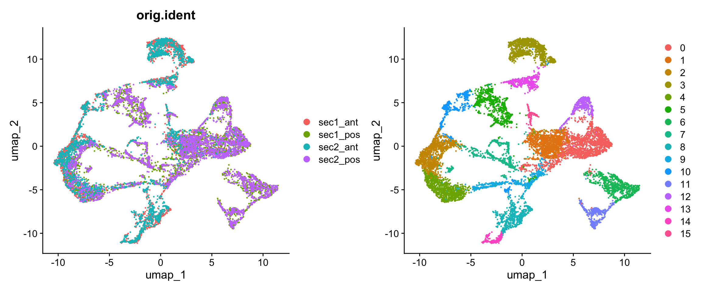
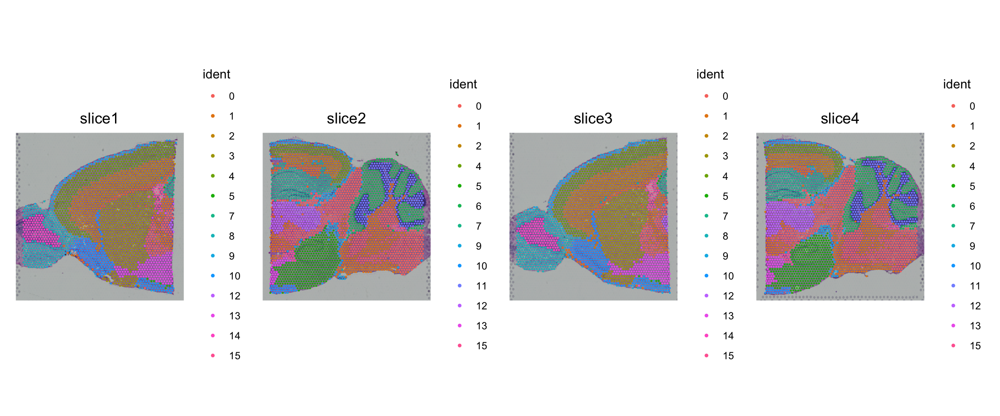
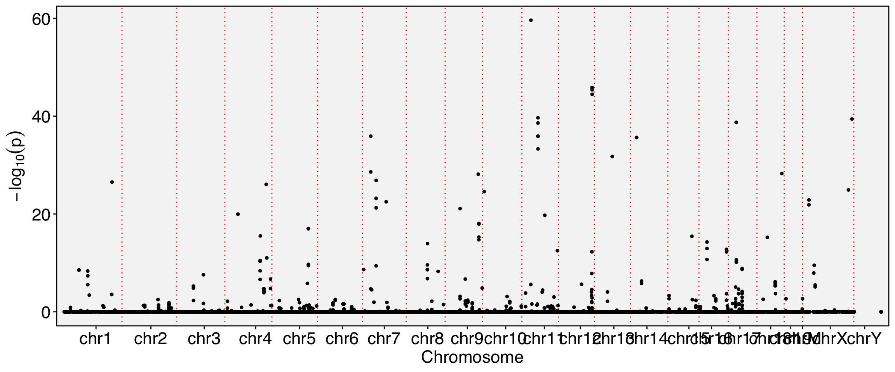

require(Yano)Loading required package: Yano── Attaching packages ────────────────────────────────────────────── Yano 1.1 ──
✔ dplyr 1.1.4 ✔ Seurat 5.3.0
✔ ggplot2 3.5.2 exp.1 <- ReadPISA("./visium/section1/Anterior/exp/", prefix = "sec1_ant_")
image.1 <- Read10X_Image("./visium/section1/Anterior/spatial/")
new.names <- paste0("sec1_ant_",Cells(image.1))
image.1 <- RenameCells(image.1, new.names = new.names)
## QuickRecipe() is actually an integration function of Seurat workflow
obj.1 <- QuickRecipe(exp.1[, Cells(image.1)], verbose = FALSE)
obj.1[['slice1']] <- image.1[colnames(obj.1),]
obj.1$orig.ident <- "sec1_ant"
exp.2 <- ReadPISA("./visium/section1/Posterior/exp/", prefix = "sec1_pos_")
image.2 <- Read10X_Image("./visium/section1/Posterior/spatial/")
new.names <- paste0("sec1_pos_",Cells(image.2))
image.2 <- RenameCells(image.2, new.names = new.names)
obj.2 <- QuickRecipe(exp.2[,Cells(image.2)], verbose = FALSE)
obj.2[['slice2']] <- image.2[colnames(obj.2),]
obj.2$orig.ident <- "sec1_pos"
exp.3 <- ReadPISA("./visium/section2/Anterior/exp/", prefix="sec2_ant_")
image.3 <- Read10X_Image("./visium/section2/Anterior/spatial/")
new.names <- paste0("sec2_ant_",Cells(image.3))
image.3 <- RenameCells(image.3, new.names = new.names)
obj.3 <- QuickRecipe(exp.3[, Cells(image.3)], verbose = FALSE)
obj.3[['slice3']] <- image.3[colnames(obj.3),]
obj.3$orig.ident <- "sec2_ant"
exp.4 <- ReadPISA("./visium/section2/Posterior/exp/", prefix="sec2_pos_")
image.4 <- Read10X_Image("./visium/section2/Posterior/spatial/")
new.names <- paste0("sec2_pos_",Cells(image.4))
image.4 <- RenameCells(image.4, new.names = new.names)
obj.4 <- QuickRecipe(exp.4[, Cells(image.4)], verbose = FALSE)
obj.4[['slice4']] <- image.4[colnames(obj.4),]
obj.4$orig.ident <- "sec2_pos"
# Merge all processed Seurat object
obj <- merge(obj.1, y = list(obj.2, obj.3, obj.4))
obj <- QuickRecipe(obj)Set default assay to RNA
object <- NormalizeData(object, normalization.method = "LogNormalize", scale.factor = 10000)
Normalizing layer: counts.1
Normalizing layer: counts.2
Normalizing layer: counts.3
Normalizing layer: counts.4
object <- FindVariableFeatures(object, selection.method = "vst", nfeatures = 3000)
Finding variable features for layer counts.1
Finding variable features for layer counts.2
Finding variable features for layer counts.3
Finding variable features for layer counts.4
object <- ScaleData(object, features = @features)
Centering and scaling data matrix
object <- RunPCA(object, features = @features
PC_ 1
Positive: Trf, Apod, Plekhb1, Mbp, Cnp, Plp1, Mobp, Car2, Mag, Dbi
Cryab, Mog, Cldn11, Bcas1, Sept4, Mal, Ndrg1, Ptgds, Gatm, Ermn
Qdpr, Ppp1r14a, Sparc, Gsn, Ugt8a, Gfap, Fa2h, Gm20425, Pllp, Tmem88b
Negative: Calm2, Ctxn1, Rtn1, Chn1, Nrgn, Syt1, Ppp3r1, Cx3cl1, Ptprn, Gria2
Gpm6a, Sept5, Ptk2b, Gp1bb, Enc1, Calm1, Fbxl16, Basp1, Arf3, Snca
Meg3, Camkv, Hpcal4, Syt5, Chst1, Nsg2, Icam5, Ppp3ca, Pld3, Dclk1
PC_ 2
Positive: Tmsb4x, Nrgn, Inf2, Ctxn1, Ngef, Gpr88, Gng7, Ddn, Adcy5, Pde1b
Camkv, Rgs9, Phactr1, Kcnip2, Klhl2, Ptk2b, Lrrc10b, Ptpn5, Tac1, Cx3cl1
Adora2a, Bcl11b, Efnb3, Crip2, Mal, Pde2a, Ppp1r1a, Tmem158, Basp1, Hpca
Negative: Cbln1, Car8, Neurod1, Pcp2, Gm2694, Ppp1r17, Lhx1os, Zic1, Nrep, Shf
Rgs8, Kcnc3, Grin2c, Ank1, Inpp5a, Homer3, Grm4, Pvalb, Kcnc1, Il16
Sphkap, Icmt, Calb2, Trim62, Gng13, Il20rb, Chn2, Pagr1a, Dusp5, Atp2a3
PC_ 3
Positive: Cck, Stmn1, Gnas, Nrn1, 3110035E14Rik, Slc17a7, Olfm1, Vsnl1, Tbr1, Lingo1
Stx1a, Slc30a3, Ncald, Dkk3, Efhd2, Rtn4r, Neurod6, Miat, 1110008P14Rik, Gm11549
Mpped1, Basp1, Pde1a, Gabbr2, Nsmf, Fxyd7, Syt13, Mical2, E130012A19Rik, Osbpl1a
Negative: Penk, Rgs9, Adora2a, Pde10a, Ppp1r1b, Gpr88, Drd1, Syndig1l, Gpr6, Tac1
Lrrc10b, Rxrg, Adcy5, Scn4b, Pde1b, Rasd2, Gng7, Rarb, Slc35d3, Tmem158
Actn2, Serpina9, Strip2, Slc32a1, Ankrd63, Kcnab1, Dmkn, Gnal, Pcp4l1, St8sia3
PC_ 4
Positive: Scn4b, Mbp, Slc24a2, Qdpr, Mobp, Mag, Bcas1, Nefm, Plp1, Mal
Plekhb1, Vamp1, Nefl, Sept4, Ermn, Tspan2, Mog, Arpp19, Trf, Cnp
Cryab, AI593442, Pex5l, Tmem88b, Gpr37, Ppp1r14a, Pllp, Uchl1, Kcnab1, Snap25
Negative: Igf2, Islr, Igfbp2, Slc13a4, Mgp, Fmod, Slc6a20a, Aebp1, Ogn, Nnat
Slc6a13, Col1a2, Fabp7, Aldh1a2, Rbp1, Gjb2, Pcolce, Slc22a6, Slc13a3, Bmp7
Dcn, Fn1, Serping1, Col1a1, Crabp2, Ifitm3, Efemp1, Bgn, Vim, Fbln1
PC_ 5
Positive: Itpr1, Itpka, Zbtb18, Cplx2, Adcy1, Rnf112, Nptx1, Lmo4, Hpca, Neurod2
Dkk3, Sptbn2, Camk4, Cnr1, Cnksr2, Arpp19, Fbxl16, Tmem132a, Igf2, Prkcb
Atp1a1, Dgkz, Lzts3, Mmp17, Ppp1r1b, Neurl1a, Slc8a2, Gas7, Slc13a4, Fam212b
Negative: Slc6a11, Gng4, Nrip3, Scg2, Ptpro, Sp8, Dlx1, Hap1, Cdhr1, Th
Doc2g, Zcchc12, Pcbp3, Pbx3, Scgn, Dcx, Tshz1, Tuba1a, A230065H16Rik, Tubb3
Cacng5, Pcp4l1, Cpne4, Lgr5, Lgr6, Sp9, Dlx2, Tmem130, Adamts19, Tubb2a
object <- FindNeighbors(object, dims = 1:20)
Computing nearest neighbor graph
Computing SNN
object <- FindClusters(object, resolution = 0.5)Modularity Optimizer version 1.3.0 by Ludo Waltman and Nees Jan van Eck
Number of nodes: 12148
Number of edges: 388091
Running Louvain algorithm...
Maximum modularity in 10 random starts: 0.9314
Number of communities: 16
Elapsed time: 2 secondsobject <- RunUMAP(object, dims = 1:20)
23:23:39 UMAP embedding parameters a = 0.9922 b = 1.112
23:23:39 Read 12148 rows and found 20 numeric columns
23:23:39 Using Annoy for neighbor search, n_neighbors = 30
23:23:39 Building Annoy index with metric = cosine, n_trees = 50
0% 10 20 30 40 50 60 70 80 90 100%
[----|----|----|----|----|----|----|----|----|----|
**************************************************|
23:23:42 Writing NN index file to temp file /var/folders/38/qfwf72jx3413kwjx7lgqv3xr0000gn/T//RtmpCwA74Z/filef58e3550ded6
23:23:42 Searching Annoy index using 1 thread, search_k = 3000
23:23:48 Annoy recall = 100%
23:23:50 Commencing smooth kNN distance calibration using 1 thread with target n_neighbors = 30
23:23:52 Initializing from normalized Laplacian + noise (using RSpectra)
23:23:54 Commencing optimization for 200 epochs, with 500558 positive edges
23:23:54 Using rng type: pcg
23:24:09 Optimization finishedp1 <- DimPlot(obj, group.by = "orig.ident")
p2 <- DimPlot(obj)
p1 + p2
SpatialPlot(obj, pt.size.factor = 2) 
exon.1 <- ReadPISA("./visium/section1/Anterior/exon/", prefix = "sec1_ant_", cells = Cells(obj))
exon.2 <- ReadPISA("./visium/section1/Posterior/exon/", prefix = "sec1_pos_", cells = Cells(obj))
exon.3 <- ReadPISA("./visium/section2/Anterior/exon/", prefix = "sec2_ant_", cells = Cells(obj))
exon.4 <- ReadPISA("./visium/section2/Posterior/exon/", prefix = "sec2_pos_", cells = Cells(obj))
exon <- mergeMatrix(exon.1, exon.2, exon.3, exon.4)'as(<dgTMatrix>, "dgCMatrix")' is deprecated.
Use 'as(., "CsparseMatrix")' instead.
See help("Deprecated") and help("Matrix-deprecated").obj[['exon']] <- CreateAssayObject(exon[, Cells(obj)], min.cells = 20)
DefaultAssay(obj) <- "exon"
obj <- NormalizeData(obj)
obj <- ParseExonName(obj)Working on assay exonobj <- RunAutoCorr(obj)Working on assay : exon
Run autocorrelation test for 80178 features.
Runtime : 8.81576 mins
38771 autocorrelated features.obj <- RunBlockCorr(obj, bind.name = "gene_name", bind.assay = "RNA")Working on assay exon.
Working on binding assay RNA.
Use predefined weight matrix "pca_wm".
Processing 38771 features.
Processing 18748 binding features.
Retrieve binding data from assay RNA.
Use "data" layer for test features and binding features.
Using 7 threads.
Runtime : 2.249563 hours.FbtPlot(obj, val = "gene_name.padj")
obj[['exon']][[]] %>% filter(gene_name.pval<1e-40) chr start end gene_name strand
chr11:30106785-30109152/-/Sptbn1 chr11 30106785 30109152 Sptbn1 -
chr11:53548291-53549565/+/Sept8 chr11 53548291 53549565 Sept8 +
chr12:111806315-111806775/+/Klc1 chr12 111806315 111806775 Klc1 +
chr12:111806315-111806727/+/Klc1 chr12 111806315 111806727 Klc1 +
chr12:111806315-111806711/+/Klc1 chr12 111806315 111806711 Klc1 +
chr12:111806315-111806726/+/Klc1 chr12 111806315 111806726 Klc1 +
chr17:25717528-25717581/+/Gng13 chr17 25717528 25717581 Gng13 +
chrX:163926903-163929546/+/Ap1s2 chrX 163926903 163929546 Ap1s2 +
moransi.pval moransi autocorr.variable
chr11:30106785-30109152/-/Sptbn1 0 0.15179115 TRUE
chr11:53548291-53549565/+/Sept8 0 0.43155054 TRUE
chr12:111806315-111806775/+/Klc1 0 0.10015685 TRUE
chr12:111806315-111806727/+/Klc1 0 0.09999613 TRUE
chr12:111806315-111806711/+/Klc1 0 0.09420489 TRUE
chr12:111806315-111806726/+/Klc1 0 0.09698562 TRUE
chr17:25717528-25717581/+/Gng13 0 0.16339114 TRUE
chrX:163926903-163929546/+/Ap1s2 0 0.14487043 TRUE
gene_name.t gene_name.pval gene_name.padj
chr11:30106785-30109152/-/Sptbn1 37.43293 1.516099e-60 5.782097e-56
chr11:53548291-53549565/+/Sept8 24.71707 1.916837e-44 1.044348e-40
chr12:111806315-111806775/+/Klc1 29.48552 3.974229e-51 5.682701e-47
chr12:111806315-111806727/+/Klc1 29.44657 4.470109e-51 5.682701e-47
chr12:111806315-111806711/+/Klc1 28.69248 4.465602e-50 4.257728e-46
chr12:111806315-111806726/+/Klc1 28.27741 1.617798e-49 1.233992e-45
chr17:25717528-25717581/+/Gng13 22.75571 2.042604e-41 9.737603e-38
chrX:163926903-163929546/+/Ap1s2 25.79267 4.953734e-46 3.148759e-42